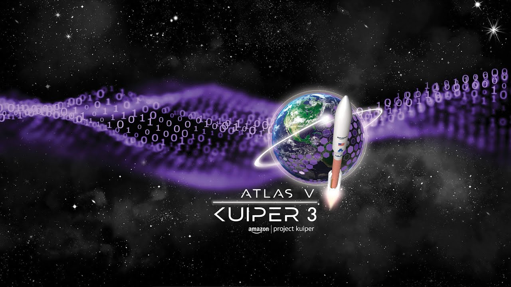
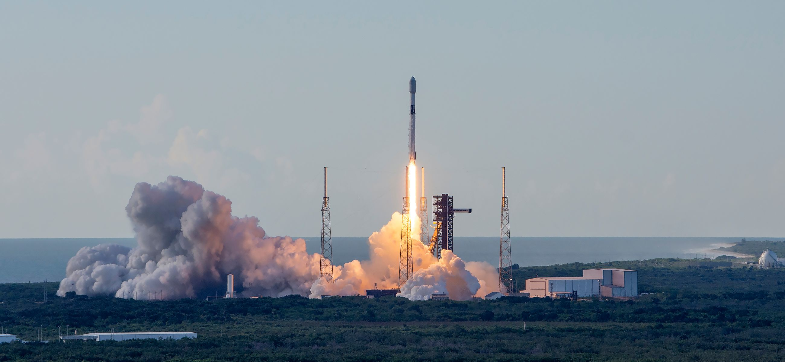
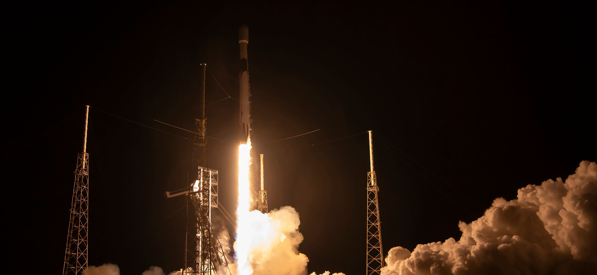
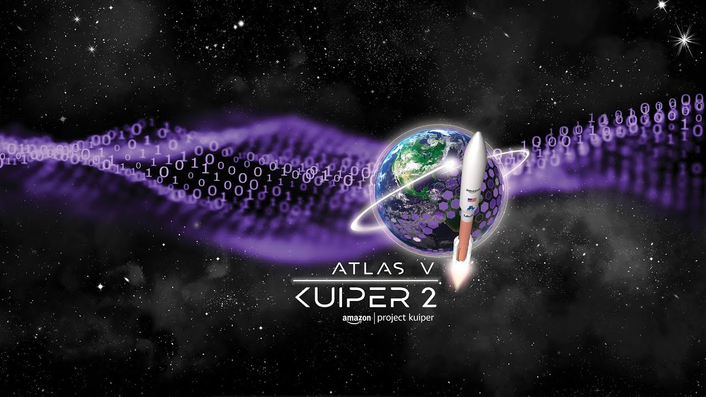
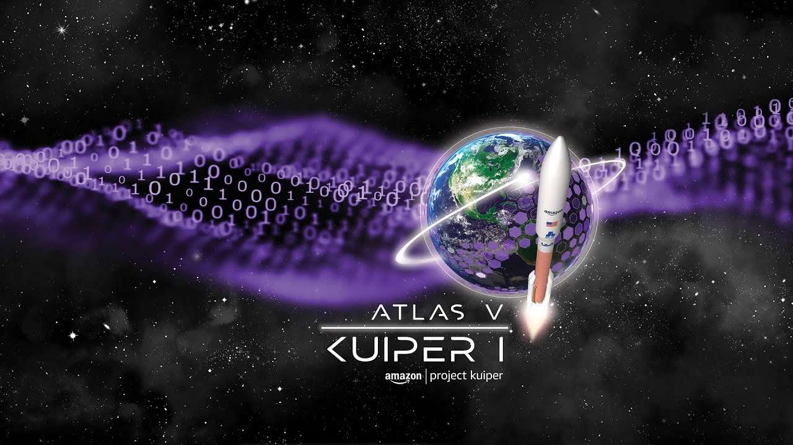
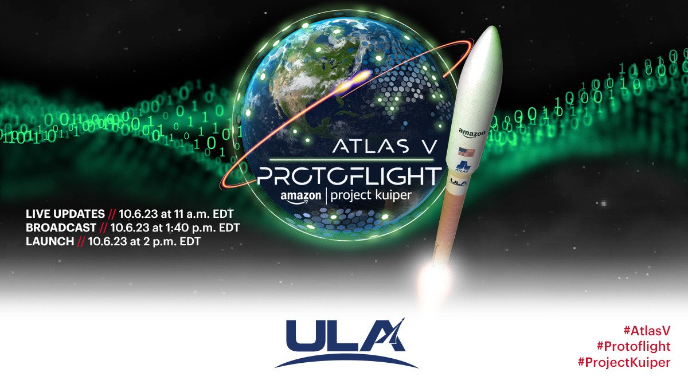

Current Role
Amazon Leo (formerly Project Kuiper) · August 2024–Present
I operate a fleet of satellites simultaneously, carrying each one through every phase of its mission — prelaunch, launch, early orbit, orbit-raising, and sustained operations. Because several satellites are often moving through different phases at once, the job is as much about prioritization as it is about flight dynamics: deciding whose needs are most time-critical, then making the real-time call under pressure.
Scope: a live, multi-satellite fleet, across every mission phase, operating around the clock.
The phases build on each other. Orbit determination establishes where a satellite actually is, which feeds conjunction assessment — evaluating Conjunction Data Messages (CDMs) to judge collision risk against other objects in orbit. When that risk calls for action, I plan and verify a maneuver before it executes, then confirm the satellite has settled back into station-keeping. Telemetry monitoring and anomaly triage run continuously underneath all of it, so a developing issue gets caught and worked before it affects the fleet.
Beginning with the KA‑03 mission, I lead my team's portion of prelaunch and launch activities.
A fleet operating continuously needs continuous coverage. Operations are split across sites, including coverage support from London, with structured handoffs between teams so nothing goes unmonitored between shifts.
Also: Python automation and operational-procedure development, in support of the responsibilities above.
View Amazon Leo mission updates →
Across my broader involvement with the program, I have provided flight dynamics operational support for the following missions.
Third Falcon 9 mission deploying 24 Project Kuiper satellites.
Launch vehicle: SpaceX Falcon 9.
Launch date/time: Monday, October 13, 9:58 p.m. EDT.
Number of satellites: 24.
Launch site: Space Launch Complex 40, Cape Canaveral SFS.

Third Atlas V production launch of 27 satellites for Project Kuiper.
Launch vehicle: ULA Atlas V 551.
Launch date: Thursday, September 25, 2025, 8:09 a.m. EDT.
Number of satellites: 27.
Launch site: Space Launch Complex-41, Cape Canaveral SFS.

Second Falcon 9 mission for Project Kuiper; expanding the constellation.
Launch vehicle: SpaceX Falcon 9.
Launch date/time: Monday, August 11, 2025, 8:35 a.m. EDT.
Number of satellites: 24.
Launch site: Space Launch Complex 40, Cape Canaveral SFS.

First Falcon 9 flight carrying 24 Project Kuiper satellites.
Launch vehicle: SpaceX Falcon 9.
Launch date/time: Wednesday, July 16, 2:30 a.m. EDT.
Number of satellites: 24.
Launch site: Space Launch Complex 40, Cape Canaveral SFS.

Second production batch (27 satellites) launched via Atlas V 551.
Launch vehicle: ULA Atlas V 551.
Launch date/time: Monday, June 23, 2025, 6:54 a.m. EDT.
Number of satellites: 27.
Launch site: Space Launch Complex-41, Cape Canaveral SFS.

First full‑scale production launch of 27 satellites by Project Kuiper.
Launch vehicle: ULA Atlas V 551.
Launch date/time: Monday, April 28, 2025, 7:01 p.m. EDT.
Number of satellites: 27.
Launch site: Space Launch Complex-41, Cape Canaveral SFS.

Two prototype satellites launched to validate systems for Project Kuiper.
View Article →